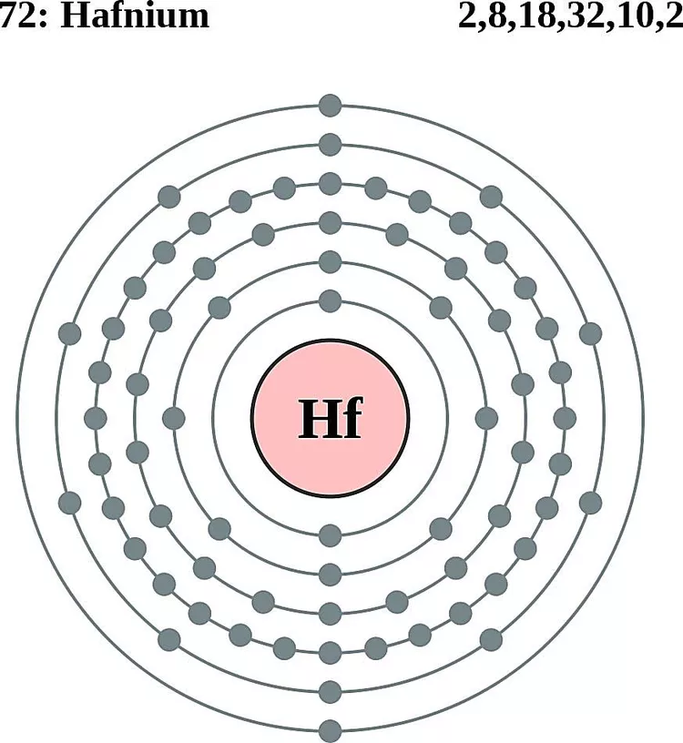

Atomic Number 72 | Corrosion-Resistant Transition Metal

Overview
Hafnium is a chemical element with the symbol Hf and atomic number 72.
It is a lustrous, silvery-gray transition metal known for its high melting point and exceptional corrosion resistance.
Hafnium is widely used in the nuclear industry and in high-temperature alloys.
Discovered in 1923 by Dirk Coster and George de Hevesy, hafnium was named after "Hafnia," the Latin name for Copenhagen,
where it was first identified.
Properties & Uses
Atomic Number: 72
Atomic Mass: 178.49 u
Electron Configuration: [Xe] 4f14 5d2 6s2
Group / Block: 4 (d-block)
Standard State: Solid at 25 °C
Melting Point: 2233 °C
Boiling Point: 4603 °C
Radioactive: No
Hafnium is used extensively in the nuclear industry due to its ability to absorb neutrons,
making it a key material in control rods for nuclear reactors. It is also employed in high-temperature alloys
for jet engines and spacecraft. Additionally, hafnium oxide is used in semiconductor manufacturing.
Hafnium in Action
Hafnium is a versatile element with unique properties that make it indispensable in various industries.
Its applications in nuclear science, aerospace engineering, and semiconductor technology highlight its importance in modern society.
Historical Perspective
Hafnium was discovered in 1923 by Dirk Coster and George de Hevesy while analyzing zirconium ores.
Its discovery was significant in confirming the periodic table's predictions for the d-block elements.
Hafnium's unique properties have made it a critical material in modern technologies.
Today, hafnium is essential in nuclear science, aerospace engineering, and semiconductor development,
highlighting its versatility and importance in advanced industries.